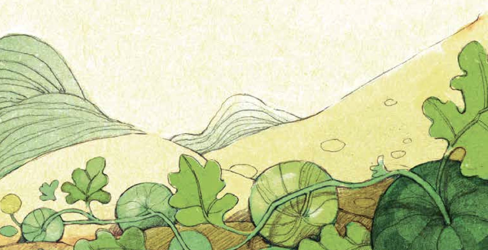
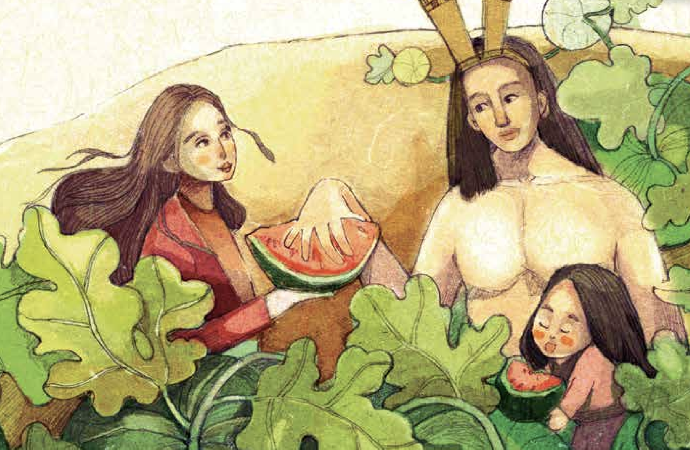
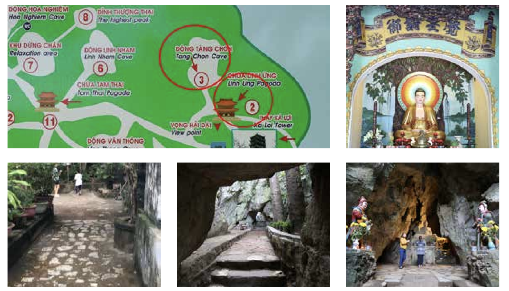
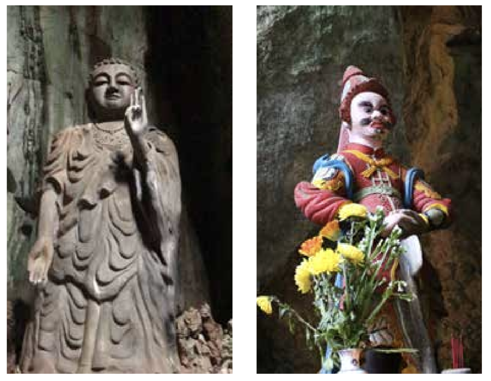
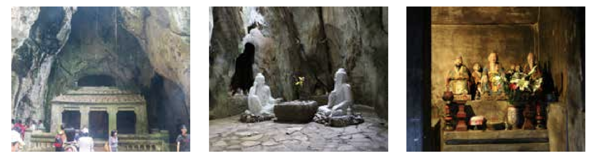
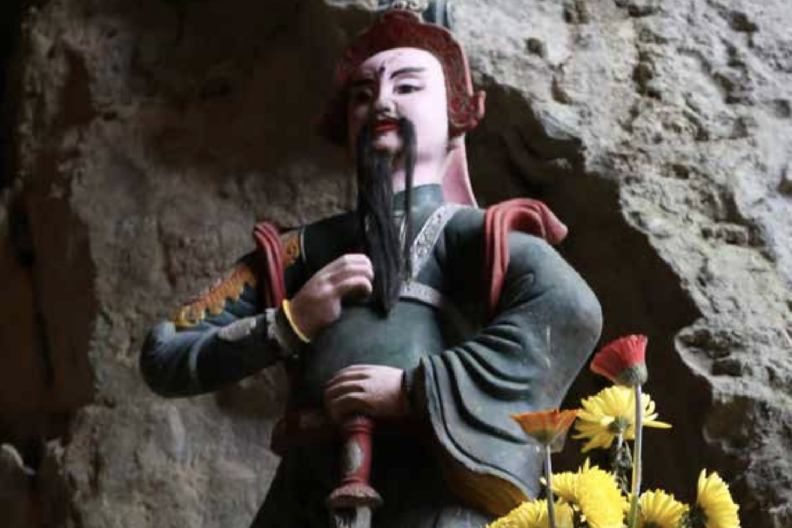

베트남을 축복의 땅이라고 부르는 여러 이유 중의 하 나는 바로 풍부한 과일이다. 과일의 제왕 두리안부터 과일 의 여왕 망고스틴까지 거의 모든 종류의 과일이 생산된다. 북으로 사파가 있어서 귤과 비슷한 오렌지 재배가 가능하 며 요즘엔 한국산 씨앗을 가져다가 달랏에서 심어 달랏산 딸기가 나오는데 그 맛과 모양이 한국산과 전혀 차이를 느 낄 수 없다. 이처럼 지력 높은 이 땅에서 대부분 과일은 크 고 당도가 높으며 양이 많이 생산된다. 그러나 문제는 중국산 싸구려 과일에 각종 화학 첨가제가 포함된 가짜 과일과 불량 과일이 유통되어 한차례 큰 홍역 을 치르기도 했다.
그런데도 저렴하며 사시사철(?) 언제든 먹을 수 있는 길쭉 한 수박만큼 사랑받는 과일도 없을 것이다. 언제고 베트남 의 과일을 소개할 기회가 있으면 한다. 하여튼 이 수박의 당도는 설탕을 먹는 것과 다름없을 정도라 아주 달고 씨도 적으며 가격도 싸다. 이 수박은 베트남 말로 ‘dưa hấu ‘( 쯔어 허우)라고 하는데 이 수박에는 아주 재미있는 전설이 있어 소개해보겠다.
『 고대 베트남 웅왕( 熊王)시대에 ’매안섬’이라는 신하가 있었다. 그는 상선에 실려 온 외국인이 었는데 왕이 상인에게 사서 종으로 삼았다. 장성한 후 매안섬은 매우 사리가 분명하며 단정했으 니 왕은 그에게 ‘매’라는 성과 ‘언’이라는 이름과 ‘안섬’이라는 호를 하사하였다. 왕이 안섬을 총애하여 많은 일을 맡겼으나 그는 교만한 마음이 생겨 “이것들은 내 전생의 물건 이지 왕의 은혜가 아니다”라고 공공연하게 떠들고 다녔다. 왕이 그 말을 듣고 그를 아산 해구 밖 의 모래섬으로 유배를 보냈는데 그곳은 무인도로 왕은 그에게 서너 달 양식만을 주고 모든 식구 를 가두어버렸다.
안섬의 처가 울며 통곡하니 안섬이 이르길 “하늘이 나를 낳았고 하늘이 나를 길렀다. 살고 죽는 건 하늘에 매였으니 내가 무얼 걱정하겠소?” 하였다.
이후 왕이 안섬을 생각하고 그가 사는 곳에 사람을 보냈고 그 사람은
돌아와 자기가 본 대로 왕에게 고했다.
왕이 탄식하며 “ 안섬이 전생 운운한 말은 거짓이 아니로구나!”라고
말하고는 관직을 회복시키고 노비를 하사하였다. 이후 안섬이 살던 모래섬을
‘안섬주’라고 하고, 그 오두막집을 ‘매와’라고 했다. 당시 사람들은 안섬을 추대해 '서쪽에서온 외의(서과(西瓜))부모'라고 했으며 지금도 그 풍습이 남아
있다.
- 베트남의 신화와 전설 [무경]-
수박에는 속을 편안하게 하며(관중,寬中) 갈증을 그치게 하고(지갈,止渴) 무덥고 습한 기운에 손상되었을때 열독의 기를 제거하는 청서해독(淸暑解毒) 효능이 있 다고 하니 무덥고 습한 베트남에서는 최고의 과일이라 할 수 있겠다.』

Thắng Cảnh Ngũ Hành Sơn
주소-81 Huyền Trân Công Chúa, Hòa Hải,
Ngũ Hành Sơn
관람시간 : 6:00 AM ~ 19:00 PM
휴무일 : 없음
입장료 : 40,000동,엘리베이터 15,000동[별도]
오행산의 린응사는 규모가 그리 크지 않지만, 유서 깊은 곳이다. 부처님 위에는 각황조어(覺皇調御)라는 부처님 이름이 쓰여 있고, 좌우에는 자심(自心)과 본성(本性)을 강조하는 문구가 쓰여 있다. 기둥에는 도자기로 만든 용이 꿈틀거리고 있으나, 1825년 민망 황제가 이곳을 방문해 시주하면서 원래 지금의 영응사(靈應寺)처럼 좀 더 화려한 절로 변신하게 되었다.
민망(명명제 明命帝) 황제는 응우옌 왕조의 최고 전성기를 구가한 왕으로 건국때의 국호인 비엣남(越南, 월남)을 다이난(大南, 대남)으로 바꾸었고 밖으로는 캄보디아로 군사 원정을 하여 주변의 모든 세력에게 베트남의 위명을 떨쳤고 산악 지대의 소수 민족에 대한 통제 강화를 도모하였다. 1832년에는 속국으로 자치를 보장해 주던 참파를 완전히 병합하는 등 영토를 넓혔고 남쪽과 북쪽의 달랐던 의상을 통합하는 칙령을 발표하는 등 내치에 힘써 베트남의 중흥기 를 열었던 황제라고 한다.
그의 고려인삼에 대한 사랑도 유명한데 인삼의 품평은 물론이고 중앙 및 지방의 고위 관료들에게 병 치료나 노부모 선물용으로 홍삼을 하사하였다고 한다.앞으로 다가가 본당을 안쪽을 들여다보니 역시 LED로 만든 조잡한 광배가 번
쩍인다.
이 불당의 왼편으로 나 있는 작은 길을 따라 들어가면 이곳 동굴들 중가장 찾기 힘들어하는 ‘Tang Chon 동굴’이 있다.
영응사 뒤편으로 첫 번째 동굴인 ‘Tang Chon’ 동굴이 있다는 것을 많은 이들이 위치를 찾지 못해서 그냥지나치는 경우가 많다.

▲ 2번이 영응사고 사찰의 왼편 끝에서 오른쪽으로 돌면 3번 탕촌(Tang Chon) 굴로 갈 수 있다.
머리를 숙이며 좁은 입구를 지나자 바로 앞에 커다란 부처상이 좌우에 신장을 거느리고 나를 반긴다.
이 신장은 참파의 보호 신장이라고 한다.
오른쪽 틈처럼 보이던 오른쪽 바람이 잘 통해서 불기로 유명한 천용곡(Thiên Long Cốc)입구가 보인다.
어둡지만 위쪽으로 들어가면 산 정상과 이어져 있으며 Chơn Tiên동굴로도 연결되어 있다고 한다.
이곳은 산정상으로 통하기에 용이 드나드는 통로라고 부른다고 한다. 입구에는 제단에는 참파의 신들 중 하나가 부조로 아로새겨져 있다.

오른쪽으로 작은 암자 모양이 있는데 이곳은 각각 노자, 목성을 담당하는 영선성모, 금강 팔부가 모셔져 있다.
도교와 불교 그리고 참파의 문화가 한자리에 모여 있으니 수많은 문화가 흘러 이곳 오행산에서 그 모습을 간접적으로나마 드러나고 있다.
암자의 왼편으로 돌아가자 시멘트로 부어 만들어진 석가모니 상이 홀로 조용히 서 있다. 원래 여기에는 도교의 최고 신인 옥청(玉清: 원시천존) · 상청(上清: 영보천존) · 태청(太清: 도덕천존)의 삼청(三清)이 자리하고 있었다고 전해지나 어쩐 일인지 이 석가모니 상으로 바뀌었다고 한다.

제단을 끼고 오른쪽으로 돌자 장기를 두고 있는 두 신선이 있다. 선짜산의 딘반꺼(장기판 정상)의 신선이 이곳에서도 역시 장기를 두고 있다.
티엔사 해변의 선녀 전설 그리고 이곳에 이렇게 숨겨진 신선상을 찾는 것 또한 재미있는 구경거리 보물 찾기라도 하는냥 즐거운 마음이 든다.
뒤쪽으로 이어진 굴을 통해 산 정상으로 올라갈 수 있다는데 시도해 보지는 못했다.
다시 안쪽으로 돌아서자 천용곡으로 비구니와 승려 몇이 스며들고 있었다. 빛 한점 들지 않는 막막한 어둠 속으로 사라지는 그들을 그저 멍하니 바라보고 있었다. 왜인지 발을 뗄 수가 없었다. 범인(凡人)은 쉽게 밟을 수 없는 청정지역에 대한 두려움일까?
단지 어두운 굴 속에 느낌이 싫어서였을까?
두고두고 의문이 들었다.

많은 한국인이 이곳에도 보인다. 멋진 노년의 신사부터 다정한 노부부, 아이를 안고 있는 신혼부부, 거기에 베트남인들
그리고 서양인들. 깃발 부대 일본인들.... 유독 시끄러운 중국 본토인들. 또 그만큼이나 요란한 대구 사투리 아지매들의
수다 소리가 조용한 산사에 독경과 목탁 소리 대신 당당하게 울려 퍼진다.
고즈넉한(?) 풍경이다. 서늘한 바람이 이마를 부드럽게 스치고 간다.